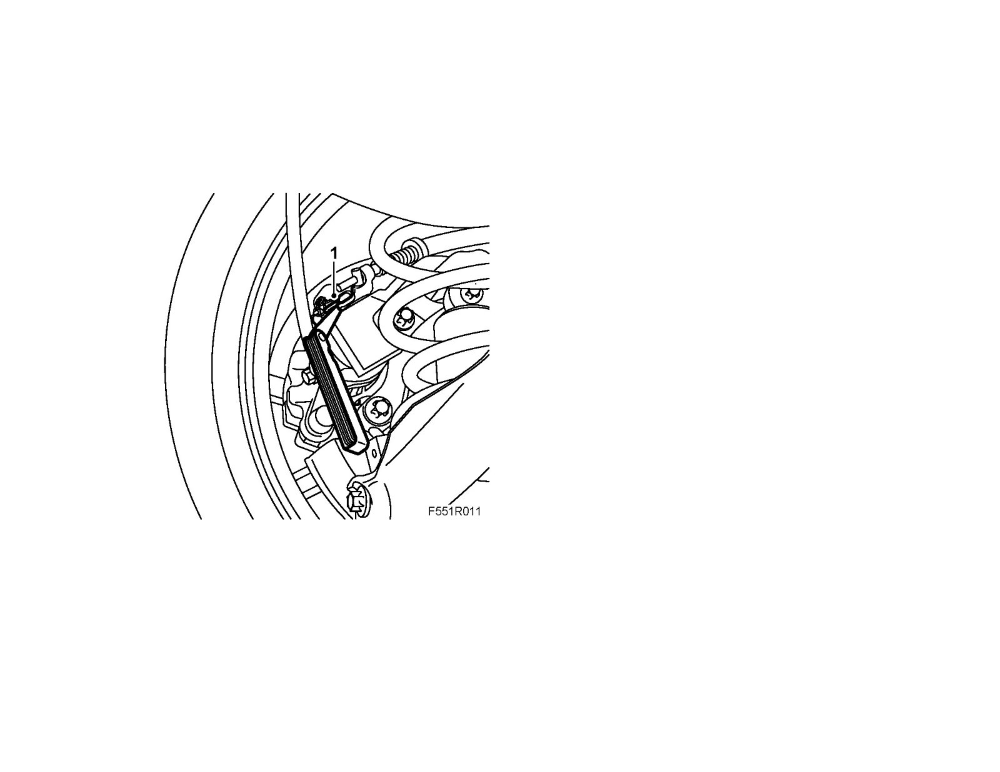

Parking Brake Cable: Testing and Inspection
Handbrake function check1. Check that the distance between the arm and brake caliper is 1 mm when the lever is in its lowermost position.

2. If the distance is incorrect, adjust the Handbrake.
3. Apply the Handbrake and check that both wheels are affected.
4. Release the Handbrake and check that both wheels rotate freely.